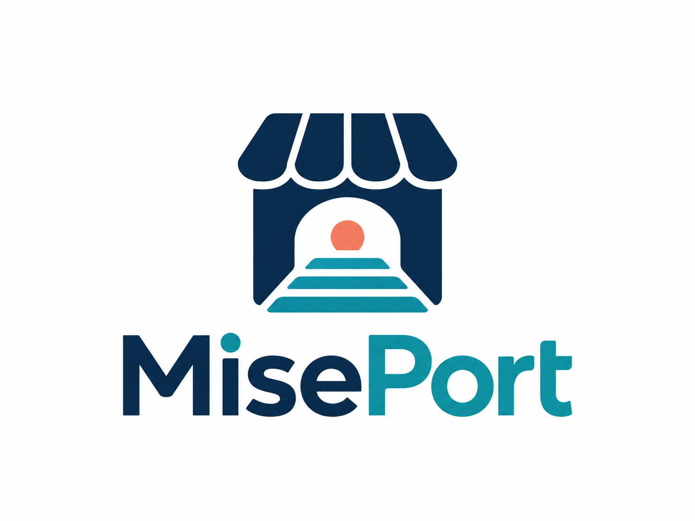

01 / IMPORT
カタログを整える
CSVからJSONへ。円単位の価格や在庫の形式を検証します。

価格も、在庫も、出典も。商品カタログを整えて、AIが確認できる形にするローカルツール。
ローカルで試す →開発中の試作 · Python 3.10+ · stdio MCP
表示は説明用イメージです。実際の商品情報ではありません。
CSVからJSONへ。円単位の価格や在庫の形式を検証します。
stdio MCPで商品検索と詳細取得。カタログは自分で選択します。
出典URL・更新日時・デモ区分を保持。不明な情報は不明のまま。
pip install -e '.[dev]'
miseport validate examples/products.json
miseport search コーヒー --catalog examples/products.json現在はローカルstdioのみ。決済・注文・取り置きは行いません。在庫や価格は取得済みデータであり、購入前には販売元で確認が必要です。
Muse参加資格、正式リポジトリ、公開ドメインは未確認です。11月10日は作業目標で、審査や公開の完了を保証するものではありません。このページは未公開の草稿です。